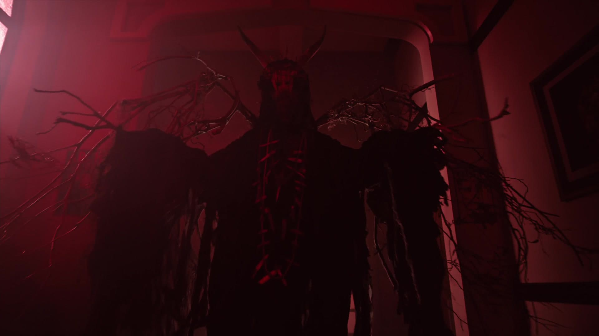
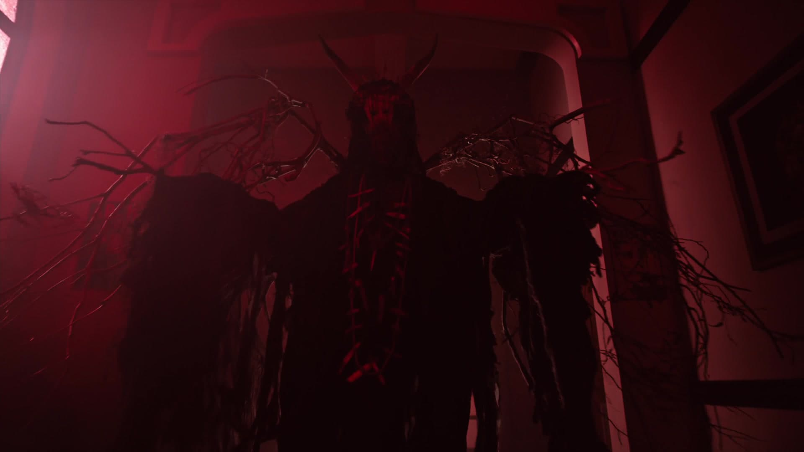

Történet
A sorozat a Riverdale nevû kisváros életébe enged bepillantást,az idillinek tûnõ kisváros sötét oldalával ismerkedhetünk meg, ahol mindennaposak a hazugságok és a rejtélyek.
A középpontban Archie Andrews és barátai állnak.
Mûfaja Tinidráma,rejtély
3 évaddal rendelkezik amelyekben általaában 13-22 rész található ,egy rész 42 perces

 

vissza